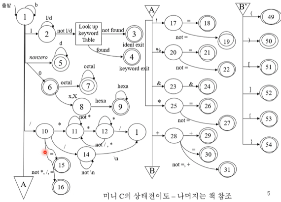

충남대학교 컴퓨터공학과 조은선 교수님의 "컴파일러 개론" 강의를 필기한 내용입니다.
다소 잘못된 내용과 구어적 표현 이 포함되어 있을 수 있습니다.
C언어(와 비슷한거) 만들기
Symbol

FSA

- 읽어보면 이해되제?
Domain

- 이것도 알겟제

- enum 써봤는데 상수 여러개를 한번에 정의할때 쓰면 좋더라
구현

- 일단 while(isspace())로 공백을 다 지움
- 그리고 superLetter()로 superLetter인지 확인하는데 이름이 superLetter인 이유는 식별자에 ‘_’ 도 올 수 있기 때문
- superLetter인 경우에는 식별자나 키워드이므로 뒤이어 나오는 superLetter를 do-while문으로 다 받는다
- 그리고 ID_LENGTH보다 i가 크거나 같을 경우에는 입력된 것이 식별자나 키워드의 최대 크기인 ID_LENGTH보다 크다는 뜻이므로 구문 에러를 발생시킨다
- 정상인 경우에는 문자 배열에 널문자를 넣어 문자열을 완성시켜주고
- 마지막으로 입력받은 superLetter나 숫자가 아닌값은 ungetc()를 통해 다시 버퍼에 넣어줘 안읽은척 해준다

- 그 이후에는 keyword배열을 훑으며 입력된 것이 keyword 테이블에 존재하는지 확인하고 존재한다면 for문을 빠져나오게 해준다
- 만약 index가 NO_KEYWORD보다 작으면 keyword테이블에 존재한다는 뜻이므로 반환할 토큰의 토큰 번호를 index에 맞는 키워드의 토큰 번호로 채워준다
- 하지만 그렇지 않다면 식별자로 처리하기 위해 토큰 번호를 식별자의 토큰 번호로 설정해주고 토큰의 값에 입력된 것을 넣어준다
- 그리고 공백 이후 나오는 첫 문자가 superLetter가 아니고 숫자일 경우에는 정수로 처리하기 위해 반환할 토큰의 토큰번호를 tnumber로 해주고 토큰 값으로 문자를 정수로 바꿔 넣어준다
- 마지막으로 식별자, 키워드, 숫자도 아닐 경우에는 연산자이기 때문에 switch case문으로 어떤 연산자인지 알아내 토큰을 생성하게 된다

- token.number의 초깃값이 tnull이었기 때문에 token.number == tnull이라면 어떤 토큰도 캐치해내지 못했다는 뜻이 된다
- 따라서 do-while문을 크게 돌아 tnull이면 다시 한번 위의 과정을 반복하여 토큰을 캐치하게 함
- 정상적인 경우라면 token.number가 tnull이 아니기 때문에 do-while문을 빠져나와 토큰 하나를 반환하게 된다
Lex
- Lex는 1975년에 만들어진 어휘분석기 생성기이다
- 옛날에는 Lex를 어휘분석기로, 그리고 yacc을 구문분석기로 해서 두개를 함께 쓰는 경우가 많았고
- 지금은 좀 더 발전된 flex를 어휘분석기로, 그리고 OCaml 설치할때 한번 봤던 bison을 구문 분석기로 해서 이 쌍을 많이 사용하더라
처리과정
- .lex(혹은 .l) 파일에 정규표현식과 여러 C코드를 넣으면 그것을 토대로 어휘문석을 해주는 C프로그램이 반환되는 구조
- 즉, 프로그램을 생성하는 프로그램인 것

- 반환된 C프로그램을 컴파일할때는 lex library를 링크해서 같이 컴파일되도록 해야됨
- 그리고 Lex의 토큰 선택 규칙은 길이가 가장 긴 토큰 혹은 .lex파일에 입력한 정규표현식 중 가장 먼저 매칭되는 토큰 이 선택되어 반환된다
- 이것은 지금의 많은 어휘분석기나 정규표현식 라이브러리에서도 사용되는 규칙이니 알아둘것
Lex에서 추가적으로 제공하는 정규표현식
- 니가 몰랐던거 두개 있다
- ”문자열” : 백슬레시로 escape하는 것 외에 “”를 통한 이스케이프도 제공함
- 즉, “++”는 ++와 같음
- 문자열/문자열 : / 앞에 나오는 문자열 바로 뒤에 / 뒤에 나오는 문자열이 이어서 나올때 매칭되지만 / 뒤에 나오는 문자열은 소비하지 않고 앞의 문자열만 나온다
- 즉, ab/cd 는 abcd와 매칭되지만 ab만 결과로 나오게 된다
- {정규표현식 이름} : 이름 정의 부분에서 정의한 이름을 가진 정규표현식을 사용하고자 할때 {이름}으로 사용해주면 된다
.lex 파일 작성 방법

- 맨 위의 %{}% 부분에는 여러 상수 변수 등을 선언하게 됨
- 그리고 사이 에 정규표현식을 적어주면 되고
- lex에서는 정규표현식에 이름을 붙여 대신 사용할 수 있는 기능을 제공하는데 이름 정의 부분에 그 이름들을 정의할 수 있음
- 마지막으로 사용자 부 프로그램 부분에 lex가 C로 변환될때 C프로그램에 같이 포함되었으면 하는 C 코드를 저기에 넣어주면 된다
lex 에서 사용되는 변수 / 함수
- lex에서 사용되는 모든 이미 선언된 변수나 함수는 yy로 시작한다
- 사용자가 선언한 함수나 변수와 이름이 겹치지 않게 하기 위함이랜다
- yyleng : 주어진 정규표현식들에 의해 매칭된 문자열의 길이를 담고 있는 변수
- yytext : 매칭된 문자열을 담고 있는 변수
- yylval : 반환할 토큰의 값을 담을 수 있는 변수
- yylval이랑 yytext랑 헷갈릴 수 있는데 lex는 매칭된 문자열을 반환하는게 아니라 매칭된 문자열에 맞는 토큰을 반환하는 것이 목적이다
- 식별자나 상수의 경우 토큰 값을 필요로 하므로 yytext를 형변환하여 yylval에 넣어주면 그 값이 토큰 번호화 같이 반환되는 셈
- yyleng이랑 yytext의 경우에는 매칭 후에 자동으로 채워지는 값이지만 yylval의 경우에는 내가 채우는 값임
- 즉, yytext는 매치된 문자열이 들어있고 yylval은 그 문자열에 대한 토큰의 토큰값을 설정하기 위한 변수인 것
- 매치된 문자열을 뭐 atoi나 atof같은 함수를 이용해 형변환을 해서 yylval에 넣어주는게 일반적이다
- yywrap() : lex가 입력의 끝을 만났을 때 호출하는 함수(endOfInputCallback 정도로 이해하면 될듯)
- 잘 모르겠으면 그냥 무지성으로 yywrap() { return 1; } 이렇게 해줘도 된다
- 하지만 없으면 에러가 나기도 하니까 무조건 사용자 부 프로그램 부분에 적어줄 것
lex 예제

- 보면 %{}%에 여러 .h파일들이 선언되어있는것을 볼 수 있고
- 그 뒤에 여러 정규표현식들이 이름을 통해 선언되어있는 것을 볼 수 있다

- 그리고 사이에 위에서 정의한 정규표현식 이름이나 그냥 정규표현식들을 이용해 매칭되었을때의 action을 정의한 것을 볼 수 있다
- NUMBER나 PLUS 이런거는 뭐 global.h에 선언되어있는듯
- {real}에 의해 실수가 매칭된 경우에 atof()를 통해 매칭된 문자열인 yytext를 실수로 바꿔주고 yylval에 넣어준 후 NUMBER라는 토큰을 반환하는 것을 알 수 있다
- 그리고 다른 정규표현식들에 대해서도 그에 맞는 토큰들을 반환하는 것을 알 수 있다
- 마지막으로 사용자 부 프로그램 부분에 yywrap() { return 1; }이 무지성으로 들어가있는 것을 확인할 수 있다
lex 예제 - 어휘분석기 말고 하나의 프로그램으로 변환되는 버전
- lex를 사용하면 토큰을 반환하는 어휘분석기를 생성하는 것 뿐만 아니라 그냥 main함수를 가지는 하나의 프로그램도 생성할 수 있다

- 위의 예제를 보면 일단 global 변수로 charCount, wordCount, lineCount가 선언되어 있고
- 두개의 정규식도 이름을 달고 있는 것을 알 수 있다
- 그리고 한 단어가 매칭되었을 때는 wordCount를 1 증가시키고 charCount에는 매칭된 단어의 길이인 yyleng이 더해지는 것을 알 수 있으며
- newline이 매칭된 경우에는 charCount와 lineCount를 1 증가,
- 마지막으로 위 두가지 어느 경우에도 해당되지 않는 경우에는 걍 charCount만 1 증가하도록 되어 있다
- 근데 보면 어떤 정규식에 매칭되어도 return되지 않는다는 것을 알 수 있다 - 즉, 매칭될때마다 토큰을 반환하는 것이 아닌 매칭 후에 위의 action을 취하고 계속 매칭해나간다는 것을 알 수 있음
- 매칭되었을 때 토큰을 반환하고 싶으면 return을 쓰면 되고 계속 하고싶으면 return을 안쓰면 된다
- 그리고 사용자 부 프로그램 부분에 main함수가 있어 바로 실행할 수 있는 프로그램으로 변환되는데
- 여기에 보면 stdin으로 파일 이름을 받아오고 그 파일을 열어 yyin에 넣어주는 것을 알 수 있다
- 즉, yyin이라는 것은 정규식으로 검토할 input 을 받는 변수라고 생각할 수 있다
- 그리고 yylex() 를 호출하게 되는데 yylex() 는 주어진 정규식으로 input을 검토하는 함수가 되는 것
- yylex()를 호출하고 난 뒤에는 넣어준 파일을 다 점검하고 끝나므로 global 변수들에 값이 다 채워져 있게 된다
- 그리고 printf로 이 변수의 값을 stdout으로 출력하는 것으로 프로그램이 끝나게 되는 것